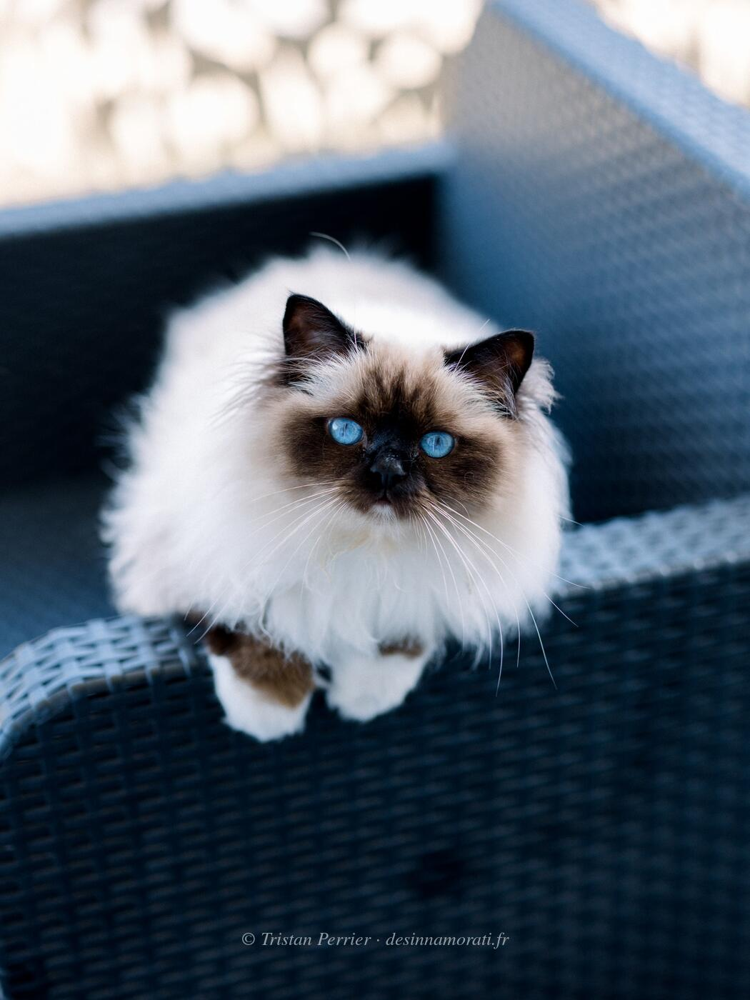
RobeMâle · Seal point
Naissance1 juin 2021
ParentsCrowned Dream Kacey × Oedipe des Innamorati
TitresPR
StatutAdopté
Album13 photos, de juillet 2021 à décembre 2024
Frères et sœursSirius Black des Innamorati
Demi-frères et sœurspar sa mère : 2019 avec Origan de Shweli-Sittang, 2019 avec S*Easy Love's Crush Boom Bang, 2022 avec Oedipe, 2023 avec Bacckara's Bellamy
par son père : 2022 avec Padmée des Monts de Bohème, 2022 avec Crowned Dream Kacey, 2022 avec Sanae, 2022 avec Crowned Dream Lizz
par son père : 2022 avec Padmée des Monts de Bohème, 2022 avec Crowned Dream Kacey, 2022 avec Sanae, 2022 avec Crowned Dream Lizz

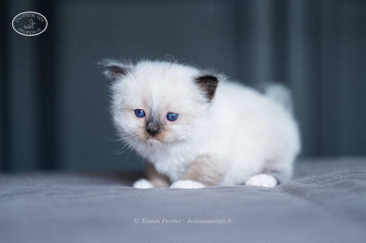

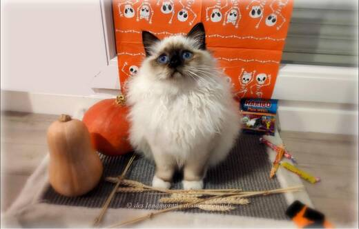

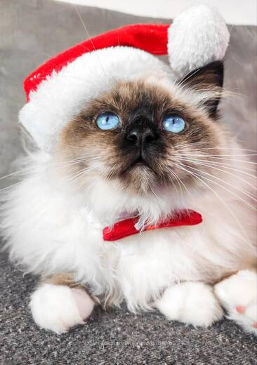

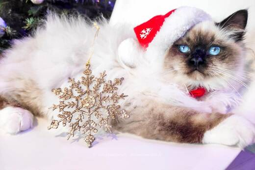

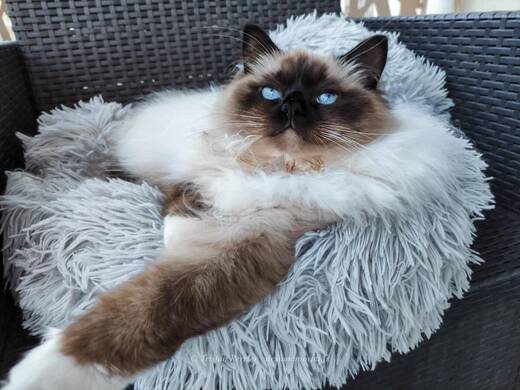

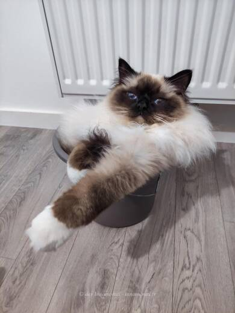

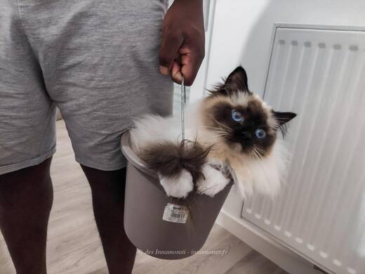

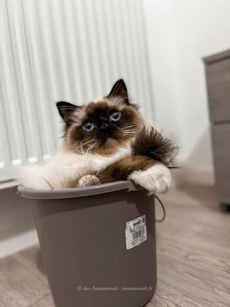


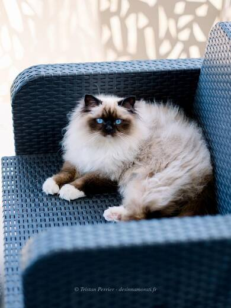

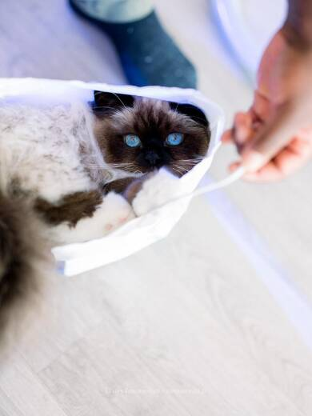

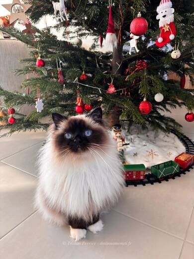

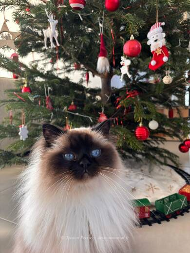
Palmarès
3 expositions · 4 jugements · 3 Best in Show2022
- Mondiale BelgiqueCAPIB · BIV · NOM
- LantonCAPIB · NOM · BIS
- Braud et Saint LouisCAP · NOM · BIS · BEST
- Braud et Saint LouisCAP · NOM · BIS · BEST
EXC Excellent (classement) · CAC, CACIB, CAGCIB, CACS certificats de champion, champion international, grand champion international et suprême · CAP, CAPIB, CAGPIB, CAPS équivalents pour les chats stérilisés · BIV meilleur de la variété · NOM nommé pour le Best in Show · BIS Best in Show · BOB Best of Best, le meilleur de toute l’exposition
Photos réduites et marquées. Elles appartiennent à la Chatterie des Innamorati et ne peuvent pas être reprises dans une annonce.